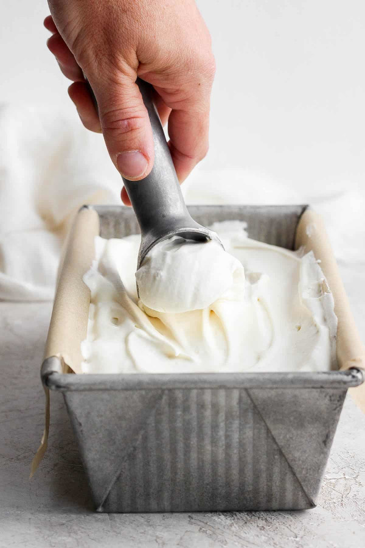

No Churn Vanilla Ice Cream

Description
Make this cool, delicious no churn ice cream at home with only four igredients. No ice cream maker needed!
Ingredients
- Sweetened condensed milk (or sweetened condensed coconut milk
- Heavy cream
- Vanilla Extract
- Sea salt
Steps
- In a large, chilled bowl, whisk together the sweetened condensed milk, vanilla extract and salt.
- In a second large, chilled bowl, whip the heavy cream until stiff peaks form.
- Fold half of the cooled whipped cream into the milk mixture.
- Pour the combined mixture into the remaining whipped cream, folding gently to further combine. Mix any ingredients you would like (chocolate chips, nuts, etc).
- Pour mixture into a chilled 9" x 5" loaf pan, lined with parchment or wax paper.
- Chill in freezer for at least four hours before serving.